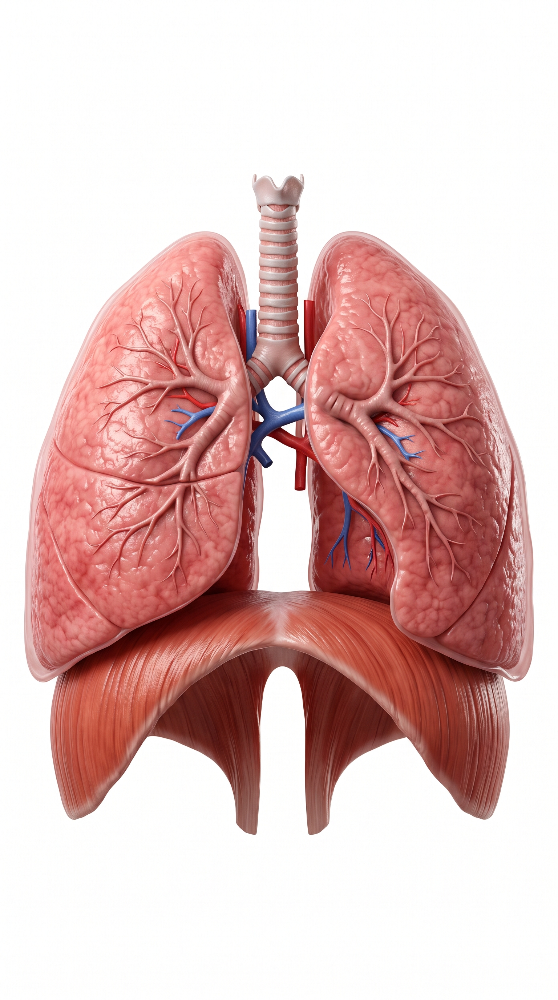
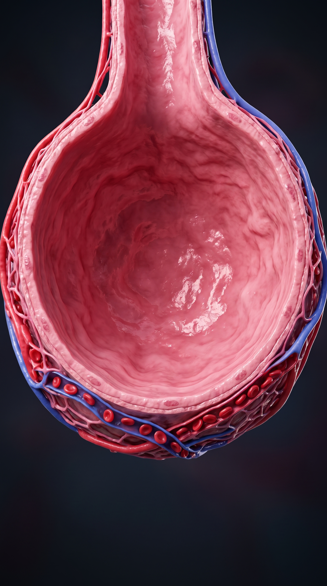

Pilih peranmu untuk memulai petualangan sains interaktif.
Created by Maela Rahma Devita
SDIT Insan Robbani • Kurikulum Merdeka
Menunjukkan topik materi atau kuis mana yang paling sering salah dijawab siswa sehingga guru tahu bagian mana yang perlu dijelaskan ulang di kelas.
Pantau ketuntasan 6 modul organ dan simulasi 3D pernapasan
| No | Nama Siswa | Level Terbuka | Progress Belajar | Status |
|---|
Data terupdate otomatis secara real-time saat siswa bermain di kelas
| Rank | Nama Siswa | Level Tertinggi | Sisa Nyawa | Total Skor |
|---|
Dokumentasikan catatan pedagogik ke dalam 3 aspek berikut untuk penyempurnaan pembelajaran.
Tersimpan di LocalStorage browser perangkat ini
Unduh rekapitulasi nilai evaluasi IPA Kelas 6 untuk kelengkapan administrasi rapor Kurikulum Merdeka atau simpan ke file Excel (.csv).
Media ini dirancang fleksibel sehingga dapat digunakan oleh guru-guru lain di sekolah yang berbeda dengan membuat kode sesi unik tersendiri.
"Pada bab ini, kamu akan mengidentifikasi dan menjelaskan organ-organ sistem pernapasan beserta proses yang terjadi di dalamnya. Selanjutnya, kamu juga akan menggabungkan informasi tersebut untuk menghasilkan aktivitas yang tepat, guna menjaga kesehatan organ pernapasan."
Kenali 6 rahasia hebat organ pernapasan: Hidung, Faring, Laring, Trakea, Paru-paru & Alveolus!
Putar 360°, uji gerak otot diafragma saat tarik napas, dan amati mikroskopis kantung alveolus!
Jawab pertanyaan berbatas waktu, pertahankan 3 nyawamu, dan rebut gelar Dokter Cilik Paru Emas!
Tahukah Kamu? Fakta Seru Tubuh Kita 🫧
Dalam satu hari penuh, kamu bernapas sekitar 20.000 kali lho! Paru-parumu bekerja tanpa lelah menjaga tubuh tetap berenergi.
Ketuk Button Kategori Utama, pilih Sub-Button Materi untuk membuka kartu penjelasan animasi, dengarkan suara penjelasannya, dan tandai sudah paham untuk menaikkan progres belajarmu!
💡 Tips: Klik tombol "Tandai Sudah Paham (+50 Poin)" di setiap materi agar progresmu bertambah dan tercatat di Portal Guru!
Ayo uji pengetahuanmu secara nyata di Laboratorium 3D atau taklukkan Arena Kuis 10 Level!
Putar model anatomi tubuh 360°, amati gerak kembang-kempis diafragma saat bernapas, dan bedah difusi molekul gas oksigen serta karbon dioksida di kantung alveoli!
Tampilan Utuh Sistem Pernapasan

Kondisi Santai / Duduk Belajar (Pernapasan Normal)
Prinsip Tekanan Udara: Udara mengalir dari tempat bertekanan tinggi ke rendah. Saat dada membesar, tekanan di paru menurun drastis sehingga udara luar tersedot masuk!
Amati bagaimana oksigen menembus dinding tipis alveolus menuju sel darah merah, dan gas karbon dioksida dibuang ke luar!

Progres simulasi laboratoriummu telah otomatis disimpan ke Dashboard Guru!
Uji penguasaan materi sistem pernapasan manusia melalui dua petualangan seru: simulasi penanganan darurat ruang kontrol medis atau investigasi tebak organ sebagai detektif cilik!
monitor_heart Simulator Ruang Kontrol Medis 10 Level
Ambil kendali ruang kontrol pernapasan darurat! Analisis laporan klinis pasien, pantau saturasi O₂ yang terus menurun, dan tentukan respon aksi cepat sebelum waktu habis.
biotech 10 Soal Analisis Visual & Tebak Fungsi Organ
Jadilah detektif anatomi cilik! Amati gambar mikroskopis dan animasi organ pernapasan, pecahkan teka-teki fungsinya, dan kumpulkan poin prestasi setinggi mungkin.
Kadar oksigen pasien stabil. Respon darurat dibutuhkan segera!